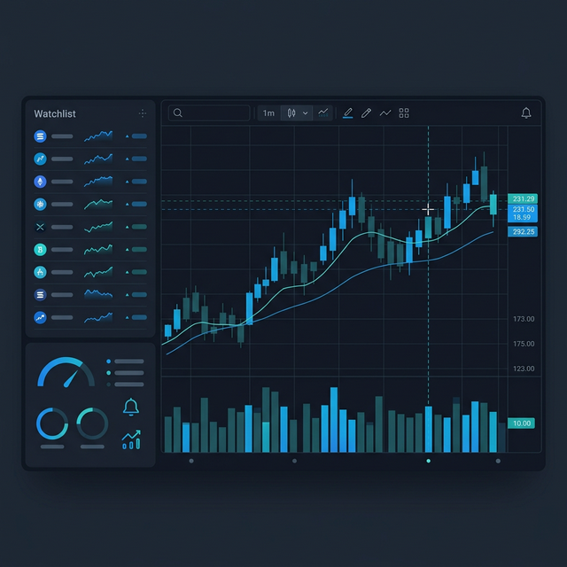

 株価分析ダッシュボード Python と yfinance を使って複数銘柄の株価推移・移動平均・出来高をインタラクティブに可視化。Streamlit で Web アプリとして公開し、ブラウザから銘柄コードを入力するだけで分析が完結します。 Python Streamlit yfinance Pandas GitHub App →
英語学習サポートアプリ YouTube 動画で出会ったフレーズを登録・管理し、音声付きラジオ形式で復習できる CLI アプリ。学習済みフレーズの除外や CSV 一括インポートにも対応。 Python gTTS CSV GitHub
Data & Canvas（このサイト） ポートフォリオと Journal を兼ねた静的 Web サイト。HTML / CSS / JavaScript のみで構築し、保守性とシンプルさを優先した構成です。 HTML CSS JavaScript GitHub